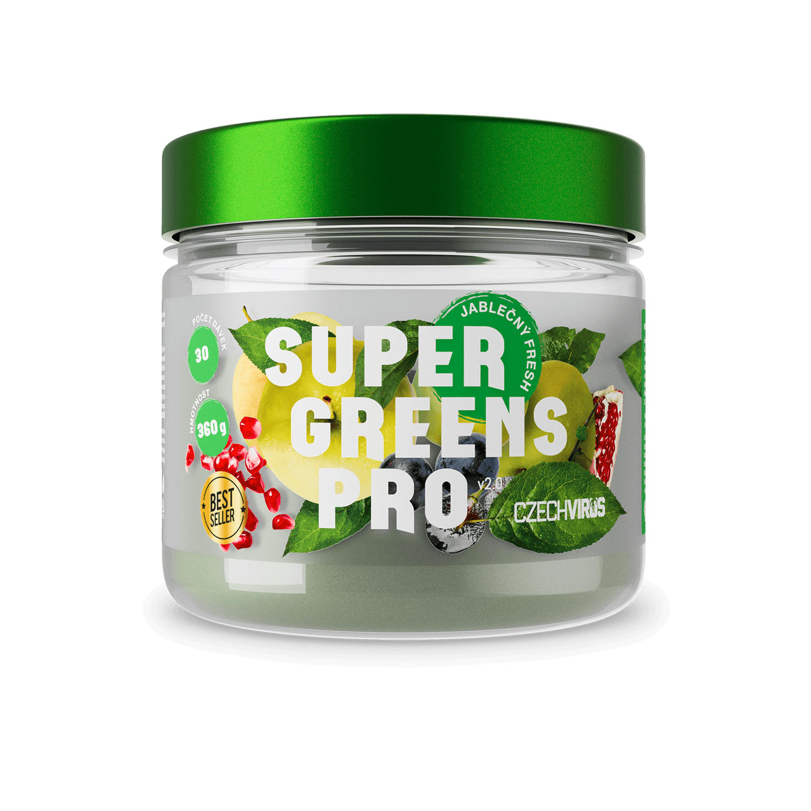
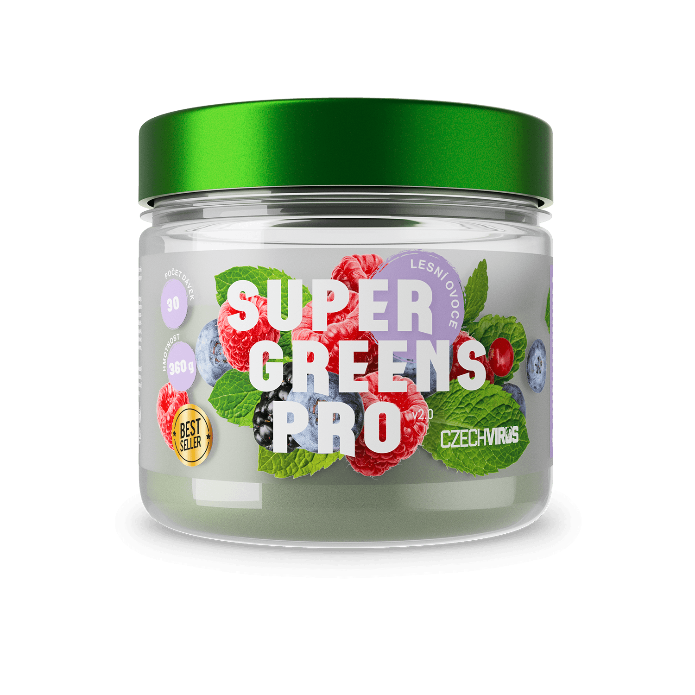
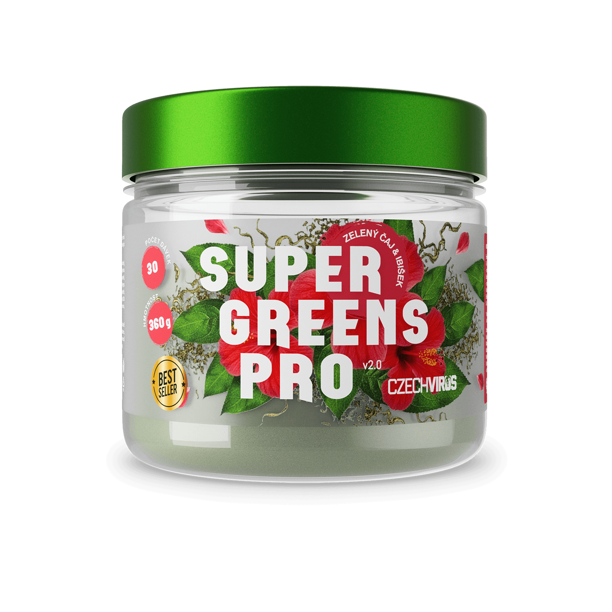
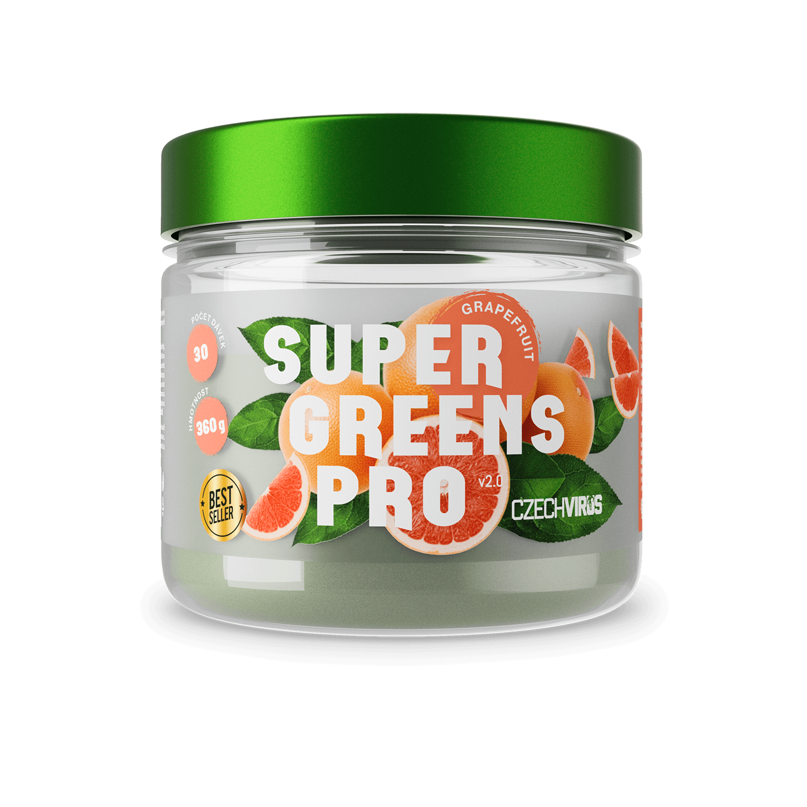
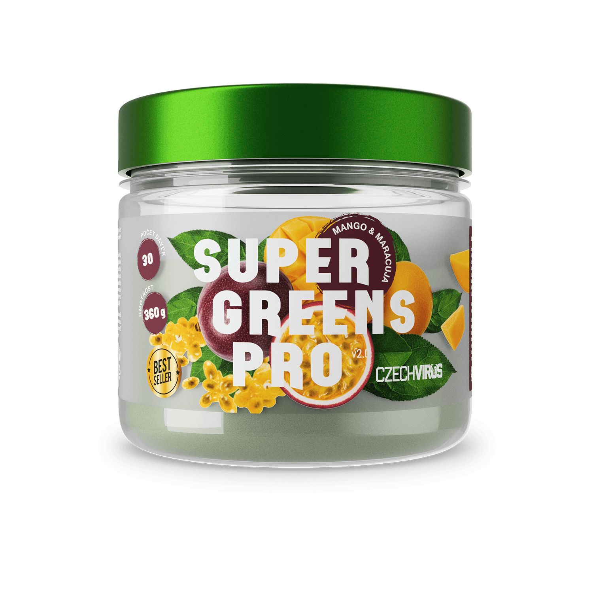
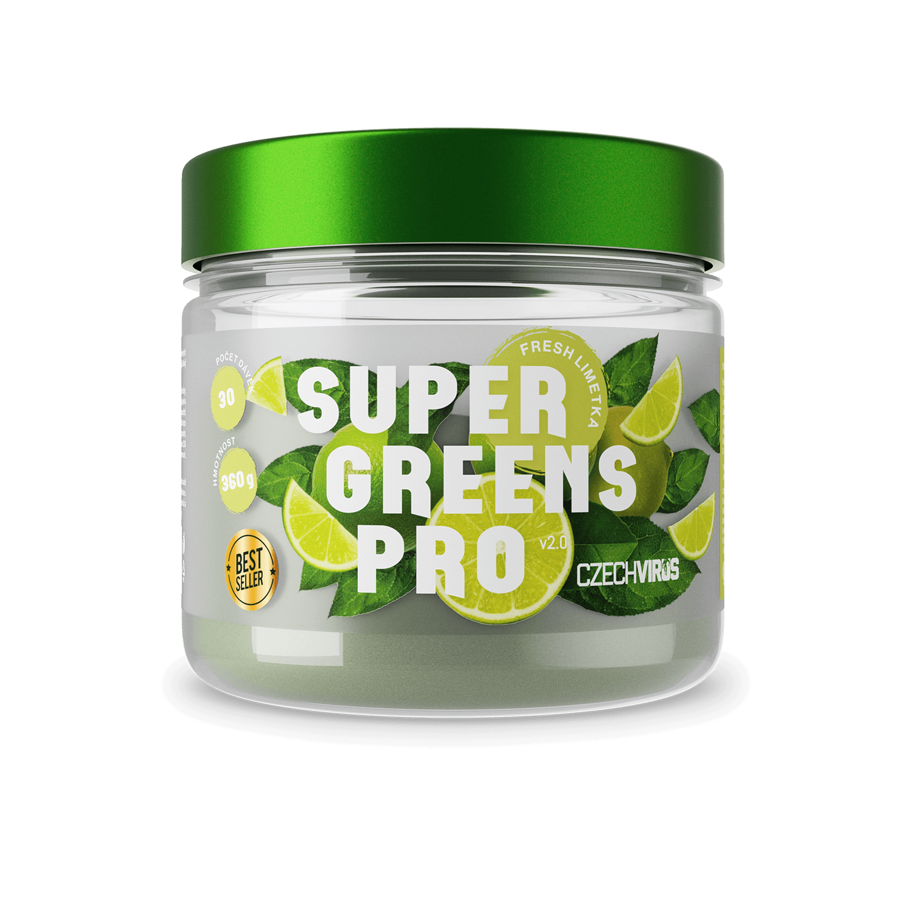

Zelené zlato pro tvé zdraví
Super Greens PRO V2.0
Super Greens PRO V2.0 je komplexní směs superpotravin, antioxidantů a trávicích enzymů, která ti dodá vše, co tvé tělo potřebuje pro plnou vitalitu.
Obsahuje chlorellu, spirulinu, mladý ječmen, reishi, cordyceps a mnoho dalšího – v jedné praktické dávce, která zvládne to, na co samotná strava nestačí.

Bestseller, který pomáhá tisícům zákazníků
S čím Super Greens nejvíc pomáhá?
Super Greens PRO V2.0 jsou nejprodávanějším produktem Czech Virus. Vyrobilo se již statisíce kusů a produkt využívají statisíce zákazníků. Na základě průzkumu jsme se dotázali, s čím jim Super Greens nejvíc pomáhá.
Výsledky jsou vytvořeny na základě 437 dotázaných zákazníků.

Podívej se na Super Greens
Super Greens v akci
Základ zdravého životního stylu
Proč zařadit greens do jídelníčku?
Moderní strava často postrádá dostatečné množství zeleniny, antioxidantů a mikroživin. Průzkumy ukazují, že většina populace nesplňuje doporučený denní příjem zeleniny a ovoce.
Super Greens PRO V2.0 je odpovědí na tento deficit – koncentrovaná výživa z těch nejkvalitnějších zdrojů, doplněná o adaptogeny, enzymy a antioxidanty.
- Podporuje imunitní systém a obranyschopnost
- Pomáhá s detoxikací organismu
- Dodává energii a vitalitu na celý den
- Zlepšuje trávení díky enzymu bromelain a papain
- Silná antioxidační ochrana buněk
Pečlivě vybrané superpotraviny
Klíčové složky Super Greens PRO V2.0
Chlorella
Sladkovodní řasa bohatá na chlorofyl, vitamíny a minerály. Podporuje detoxikaci organismu a posiluje imunitní systém.
Spirulina
Modrozelená řasa s vysokým obsahem bílkovin a antioxidantů. Přispívá k celkové vitalitě a podporuje tvorbu červených krvinek.
Mladý ječmen & pšenice
Bohaté zdroje vitamínů, minerálů a chlorofylu. Přispívají k alkalizaci organismu a podporují celkovou energii.
Jablečná vláknina
Přírodní prebiotikum podporující zdravou střevní mikroflóru a napomáhající správné funkci trávicího systému.
Extrakt z borovice mořské (Pycnogenol)
Silný antioxidant z kůry borovice mořské. Podporuje zdraví cév, kůže a pomáhá chránit buňky před oxidativním stresem. Patří mezi nejúčinnější přírodní antioxidanty.
Adaptogeny & trávicí enzymy
Víc než jen zelená směs
Tip: Kombinuj Super Greens PRO V2.0 s ColonClean Ultra pro maximální podporu trávení a zdraví střev.
Komplexní péče
Proč si vybrat Super Greens PRO V2.0?
Super Greens PRO V2.0 je nejkomplexnější greens na českém trhu. Kombinuje superpotraviny, adaptogenní houby, antioxidanty a trávicí enzymy v jedné dávce.
Navíc jsme přidali rutin, kvercetin, lykopen a naringin – látky s prokázanými antioxidačními vlastnostmi, které chrání tvé buňky a podporují kardiovaskulární systém.
A to vše s výbornou chutí a bez přidaného cukru – slazeno výhradně stévií.

Nově 6 příchutí
Vyber si svou příchuť
Super Greens PRO V2.0 je nově dostupný v 6 příchutích – 2 oblíbené klasiky a 4 zbrusu nové varianty.
Jablečný Fresh
Lesní ovoce

Zelený čaj & Ibišek

Grapefruit

Mango & Maracuja

Fresh Limetka